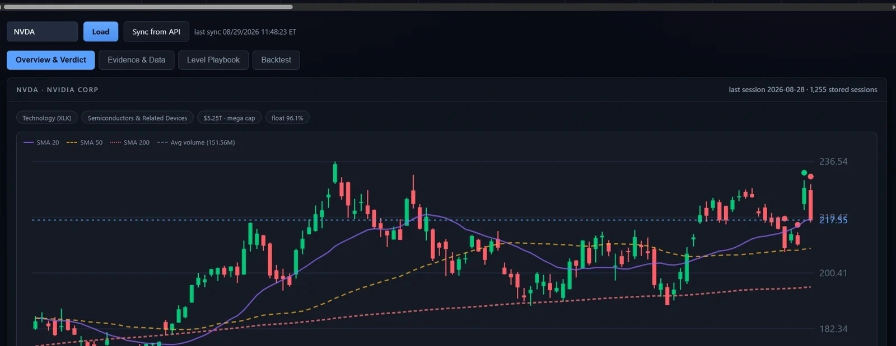

Ticker Detail reads top to bottom as one coherent argument: identity and this week's price action, the narrative verdict, composite signal score, institutional position changes, market tape, and context. Nothing here is silent — every block can return nulls with a note explaining why.

Real screenshot — Ticker Detail daily chart, Example
The four evidence blocks
LiveFlow (35%)
Chaikin Money Flow, close location, up/down volume ratio, relative strength vs SPX. Live price/volume behavior.
Shortside (20%)
Off-exchange short volume, short interest delta, days to cover. Market structure and directional pressure.
Origins — where the historical data money is concentrated geographically
The Ownership block isn't just a number — the Origins tab maps every tracked filer's HQ, sized by how much they collectively hold, so "institutional demand" stops being an abstraction.

Real screenshot — Origins tab
Composite scoring
Each block contributes to a 0–100 score showing whether evidence leans toward accumulation or distribution. Confidence is separate from strength — high confidence means all four blocks had measurable data; partial means one or more was unavailable (quarterly lag, penny stock, etc.).
- Accumulation — institutions buying, tape paying for moves, shorts covering, insiders buying
- Neutral — evidence splits; no clear directional bias
- Distribution — institutions selling, tape rolling over, shorts building, insiders trimming
State & Transition (three-dimensional read) Live
A 3×3 grid showing price drift vs flow strength across nine named phases (Accumulation, Confirmed Advance, Unbacked Advance, Distribution Risk, Confirmed Decline, etc.). Tells you not just what the signal is today, but how it's evolved over the last 30 days.
- 30d ago, 15d ago, today — state history with supporting context (RS, nowcast, short pressure)
- Confirmed vs Unbacked — is price rising with tape agreement, or running ahead without support?
- ±0.5σ threshold — a phase must clear this to be entered; ±0.25 hold for 3 sessions to publish
Nowcast — bridging the historical data reporting gap Inferred
data are up to 45 days stale by design. The Nowcast asks only whether price/volume since the quarter-close has moved with or against the last-known institutional direction — inference from tape, never disclosure.
- Last confirmed direction — what active managers held as of quarter-end
- Price since — observed move, not inferred
- Money flow since — CMF and up/down volume over the gap window
- Verdict — trend likely continuing, trend diverging, no signal